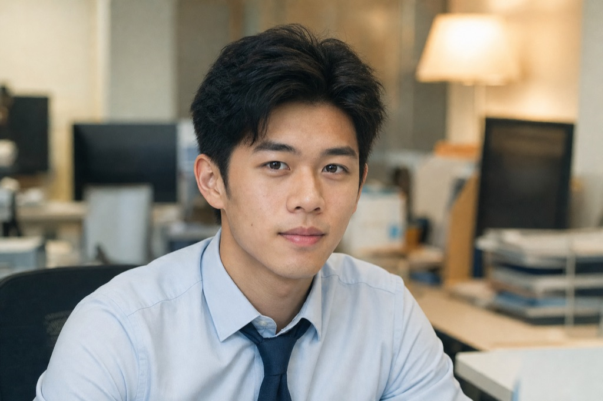
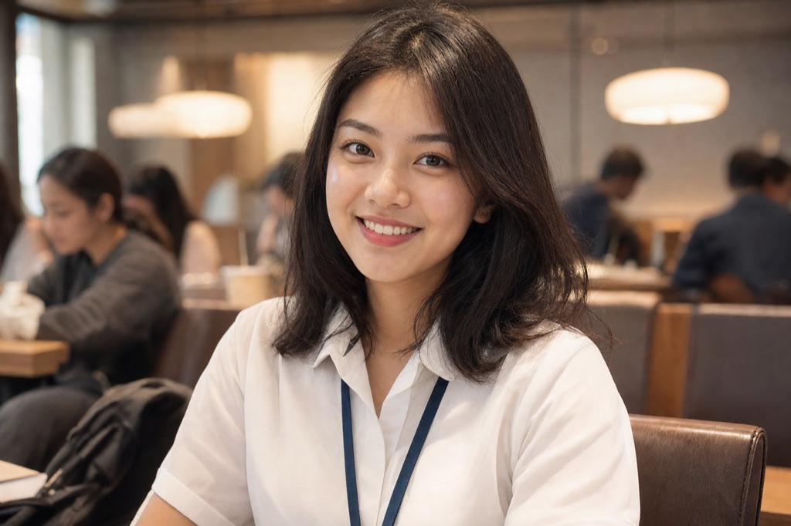
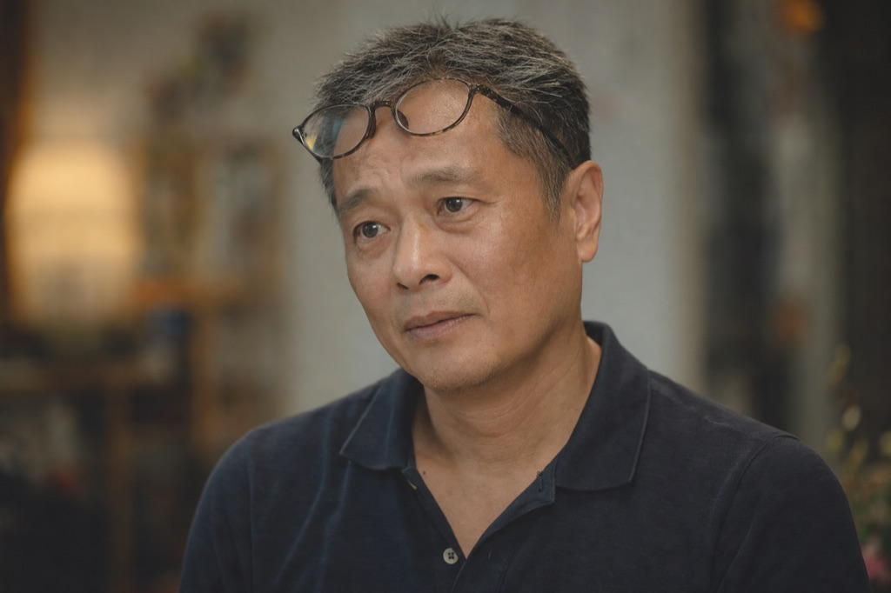

📋 Plans & Pipeline Status
| Step | Task | Status |
|---|---|---|
| 1 | Character reference portraits (Poe gpt-image-2) | ✅ Done |
| 2 | Beat images per scene (ref + scene prompt) | ⬜ Pending |
| 3 | MiniMax narration (Kyle / Raymond / Anita / narrator) | ⬜ Pending |
| 4 | ffmpeg render — Ken-Burns, captions, decision endings | ⬜ Pending |
| 5 | 21 videos: 1 opening + 4 mid-scenes + 16 outcomes | ⬜ Pending |
👥 Character Portraits (Poe-generated)



🎬 PoC Video — Kyle scenario (99s, 1280×720)
Text-slide PoC rendered from the Ren'Py script via the smartlucia pipeline. Beat images + narration pending.
📖 RISE Competition — Key Rules
- Format: branching interactive video — 1 opening + 4 mid-scenes (M1–M4) + 16 outcome clips
- Competence tags: each branch maps to C1 / C2 / C5 competence dimensions
- Deadline: Fri 30 Oct 2026 (internal target: Sat 25 Oct)
- Submission: hosted entry page with streaming video + debrief screens